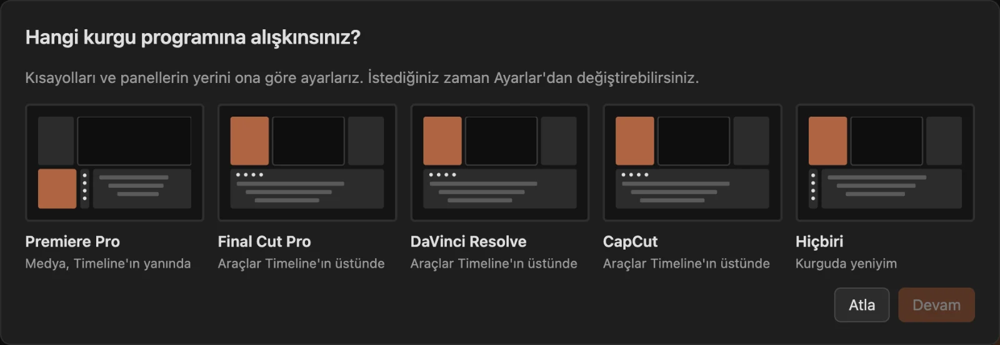
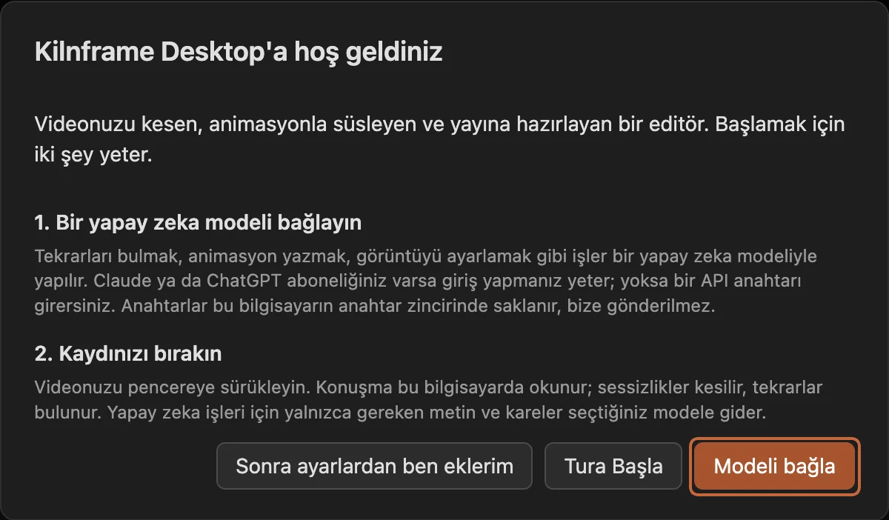

Kurulum
Kilnframe Desktop Mac, Windows ve Linux'ta çalışır. Her birinde adımlar kısa; ilk açılışta olanlar her yerde aynı.
Henüz çıkmadı. Kilnframe Desktop çok yakında çıkıyor. E-postanı bırak, çıktığı gün haber verelim.
Neler gerekli
| Sistem | Çalıştığı yer |
|---|---|
| Mac | Apple Silicon (M1 ve sonrası). |
| Windows | Windows 10 (1809 sürümü) ve sonrası, x64 ya da Arm. Microsoft Store'dan, Beta olarak. |
| Linux | x64 ya da Arm64, AppImage olarak. Beta. |
16 GB bellek önerilir. Ekran kartı şart değil; varsa (NVIDIA, AMD, Intel ya da Apple) dışa aktarma onu kullanır ve birkaç kat hızlı biter.
Mac
- İndirMac sürümünü kilnframe.com'dan indir.
- Uygulamalar klasörüne taşıİndirdiğin dosyayı aç ve Kilnframe Desktop'ı Uygulamalar klasörüne sürükle.
- AçUygulamalar klasöründen aç. Yeni sürümler kendiliğinden gelir; uygulama kurmadan önce sorar.
Windows
Windows'ta Kilnframe Desktop yalnızca Microsoft Store'dan kurulur.
- Store'da bulMicrosoft Store'u aç ve Kilnframe Desktop diye ara, ya da kilnframe.com'daki bağlantıya tıkla.
- KurAl (ya da Yükle) düğmesine bas. Güncellemeleri Store yapar.
Linux
Linux'ta Kilnframe Desktop tek bir AppImage dosyası: kurulacak bir şey yok.
- İndirBilgisayarına uygun AppImage dosyasını (x64 ya da Arm64) indir.
- Çalıştırmaya izin verDosyaya sağ tıkla, Özellikler'i seç ve İzinler'de Programı çalıştırmaya izin ver'i aç. Terminalde dosya için
chmod +xda aynı işi görür. - AçDosyaya çift tıkla.
Anahtarların ve lisansın sistemin anahtar zincirinde saklanır. Linux'ta bunun için GNOME Keyring ya da KWallet gibi bir anahtar zinciri hizmetinin çalışıyor olması gerekir.
İlk açılış
Kilnframe bir kereye mahsus iki şey sorar.
Önce Hangi kurgu programına alışkınsınız? Premiere Pro, Final Cut Pro, DaVinci Resolve ya da CapCut'ı seçersen kısayollar ve panellerin yeri ona göre olur. Kurguda yeniysen Hiçbiri'ni seç. Sonradan Ayarlar'dan değiştirebilirsin.

Sonra hoş geldin penceresi gelir. Başlamak için gerekenleri gösterir: 1. Bir yapay zeka modeli bağlayın ve 2. Kaydınızı bırakın; bir de denemenin kaç günü kaldığını. Modeli bağla yapay zeka ayarlarını açar, Sonra ayarlardan ben eklerim pencereyi kapatır, Tura Başla seni editörde kısa bir gezintiye çıkarır.

Sırada: ilk videon ya da Claude veya ChatGPT aboneliğini kullanmak.